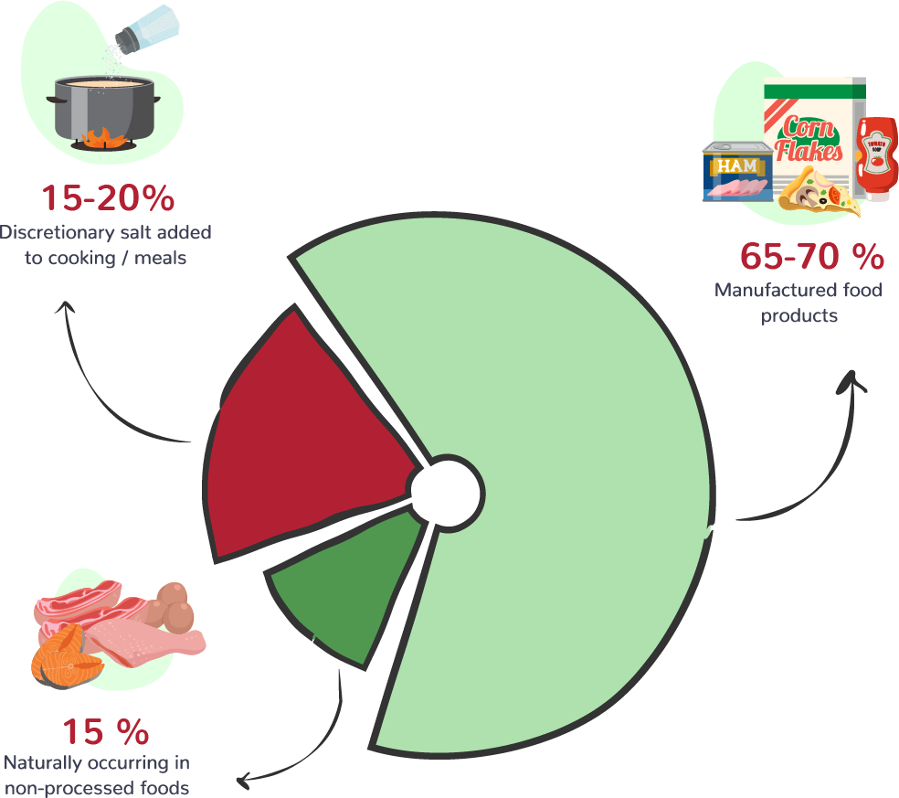

SALT & CHRONIC KIDNEY DISEASE
WHERE DOES OUR SALT COME FROM?

SUPERMARKET WEB APP
This tool will help you identify whether commonly eaten foods are low, medium or high in salt. Drag the food item to the scanner for the salt rating. All content is for general informational purposes only. Whilst every effort has been made to assess the average salt content of commonly eaten foods, users should be aware that similar products produced by different manufacturers can vary in actual salt content and should always refer to the nutritional information on the packaging.
Explore